Лабораторная работа №14
Управление дисками, разделами и файловыми системами
Лемуш Мариу Франсишку
2025
Докладчик
Лемуш Мариу Франсишку
Студент группы НПИбд-01-24
Студ. билет 1032239162
Российский университет дружбы народов ## Цель работы
Изучить архитектуру управления дисками в ОС Linux
Освоить основные команды для работы с разделами диска
Научиться создавать и удалять разделы
Получить навыки создания файловых систем
Освоить методы монтирования и размонтирования
Теоретическая справка
Управление дисками в Linux
Основные понятия: - Раздел диска — логическая область на физическом диске - Таблица разделов — MBR или GPT - Файловая система — способ организации данных - Точка монтирования — директория для доступа к ФС
Основные команды: - lsblk, fdisk,
parted — работа с разделами - mkfs — создание
файловых систем - mount, umount — монтирование
- blkid — просмотр UUID
Просмотр всех дисков и разделов
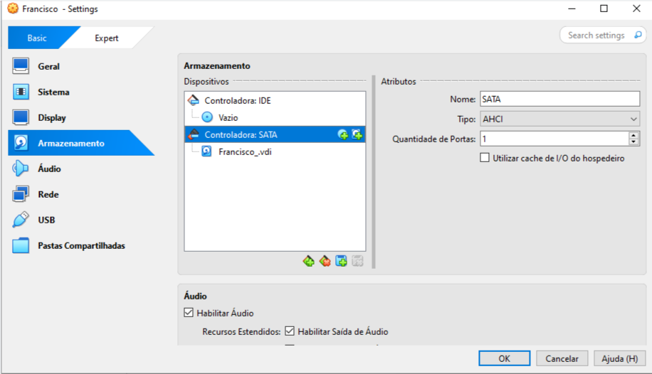
Детальная информация о дисках
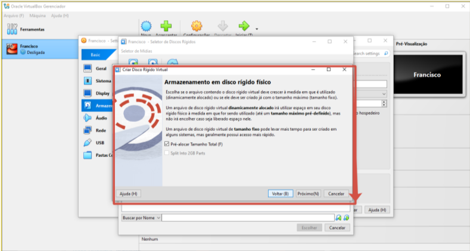
Информация о конкретном диске
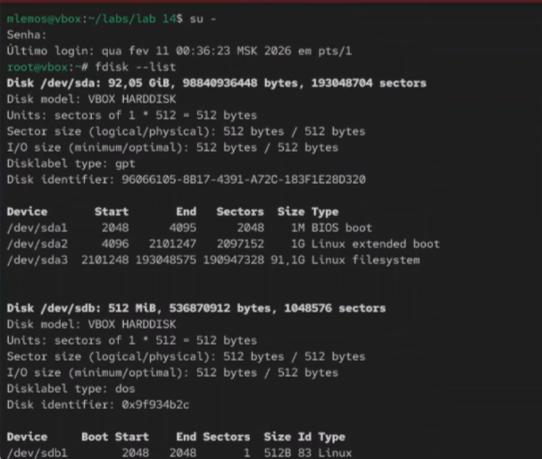
Просмотр UUID файловых систем
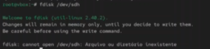
Просмотр смонтированных файловых систем
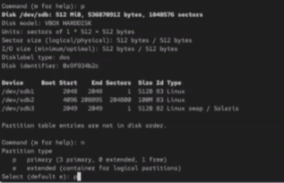
Просмотр информации о inode
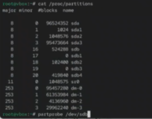
Информация о разделах в /proc/partitions
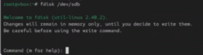
Информация о блочных устройствах в /sys
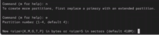
Запуск fdisk для диска
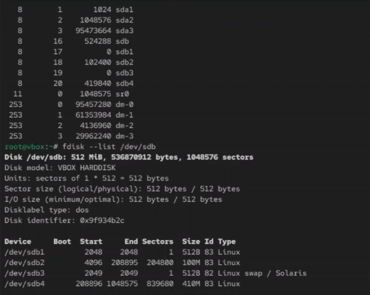
Просмотр таблицы разделов в fdisk
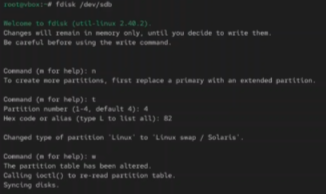
Создание нового раздела
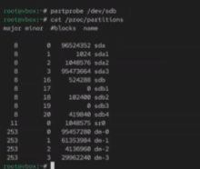
Выбор типа раздела
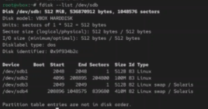
Указание номера раздела
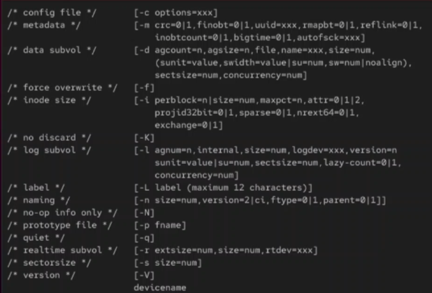
Указание первого сектора
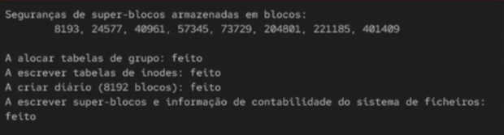
Указание размера раздела

Изменение типа раздела

Выбор кода типа раздела
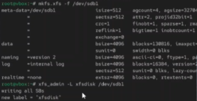
Список всех типов разделов
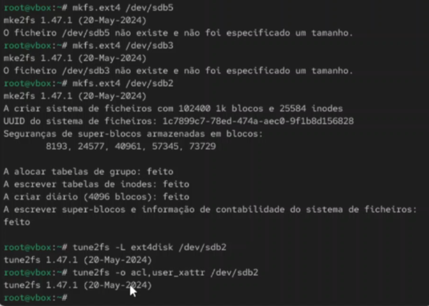
Удаление раздела
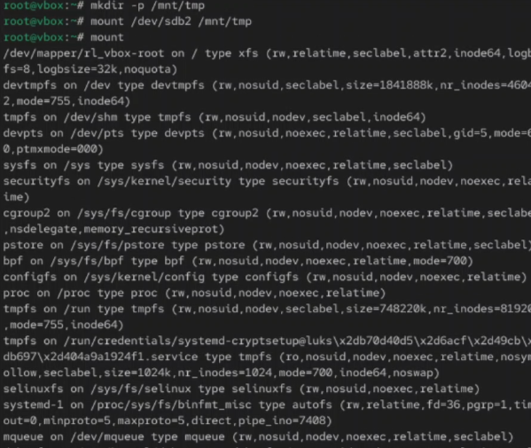
Сохранение изменений
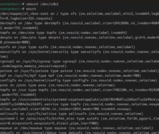
Выход без сохранения
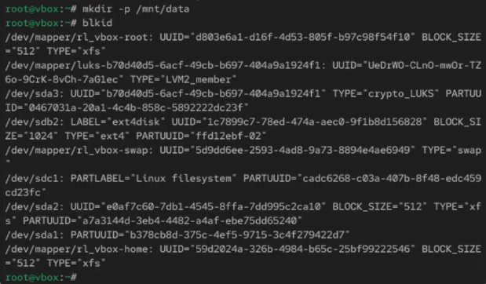
Запуск parted для диска
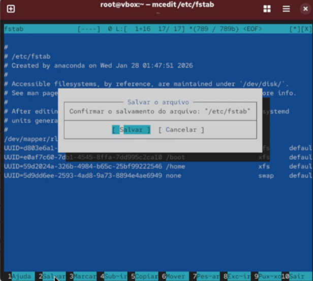
Просмотр разделов в parted
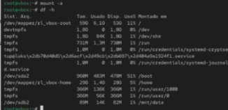
Создание таблицы разделов GPT
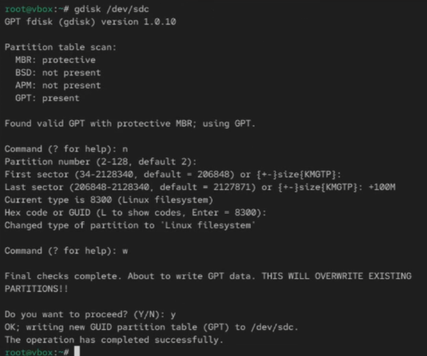
Создание раздела в parted
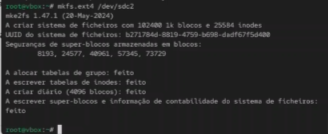
Создание файловой системы ext4
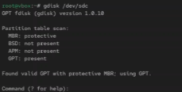
Создание файловой системы XFS
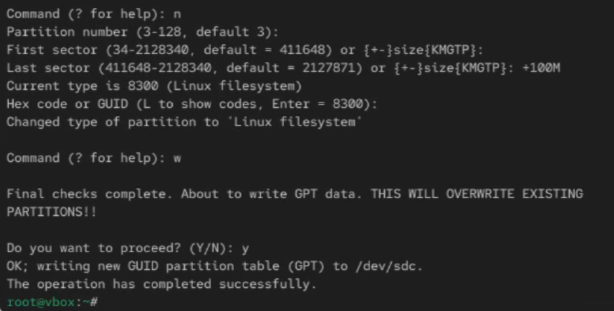
Создание раздела подкачки (swap)
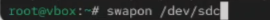
Создание файловой системы ext3
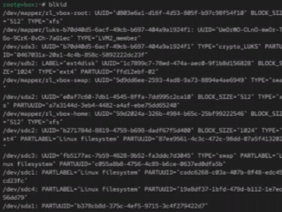
Создание файловой системы с меткой

Ручное монтирование раздела

Просмотр всех смонтированных ФС
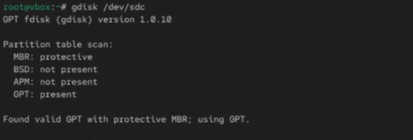
Монтирование по UUID

Монтирование с опциями
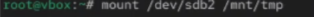
Размонтирование раздела
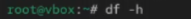
Принудительное размонтирование
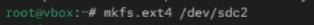
Просмотр файла /etc/fstab
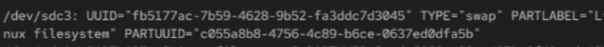
Добавление записи в /etc/fstab
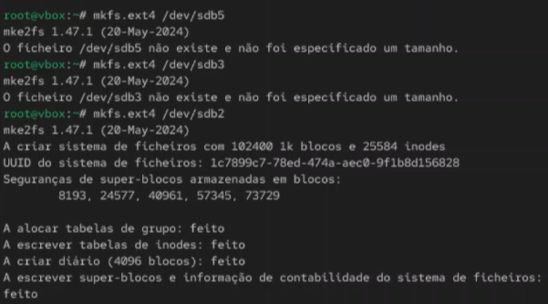
Проверка монтирования из fstab
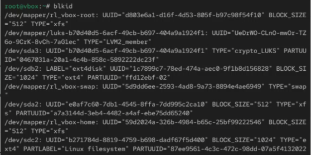
Вывод
В ходе выполнения лабораторной работы были изучены методы управления
дисками, разделами и файловыми системами в ОС Linux. Получены
практические навыки просмотра информации о дисках с помощью команд
lsblk, fdisk -l, blkid. Освоены
методы создания и удаления разделов с использованием fdisk
и parted, создания файловых систем различных типов
(ext4, xfs, swap), ручного и
автоматического монтирования через mount и настройки
/etc/fstab.
Список литературы
[1] Linux man pages: fdisk(8), parted(8), mkfs(8), mount(8), umount(8), blkid(8), lsblk(8)